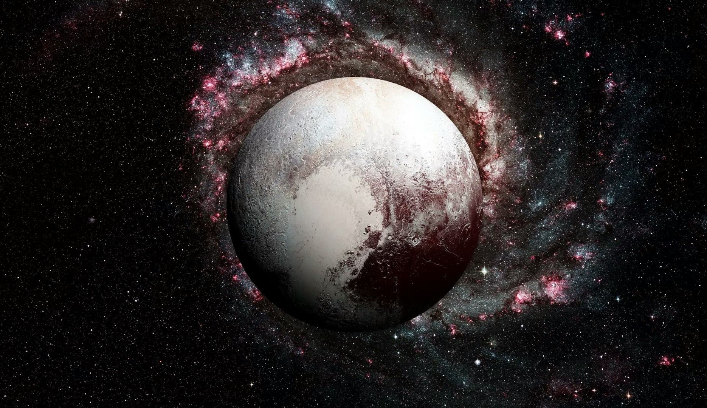

"Durante décadas, Plutão foi considerado um planeta do sistema solar. Contudo, em agosto de 2006, a União Astronômica Internacional (IAU) classificou esse corpo celeste como um dos três planetas anões: Ceres, Eris e Plutão. Essa decisão foi motivada pelas características de Plutão, em especial pela sua forma e tamanho. A distância da Terra para Plutão é muito grande, fato que dificulta as observações e o envio de sondas espaciais que possam fornecer imagens mais precisas. Entre as poucas características obtidas desse planeta anão estão a massa (equivalente a 0,24% da massa da Terra), a composição interna (gelo e rochas), a atmosfera (nitrogênio, metano e monóxido de carbono) e o diâmetro: 2.306 quilômetros." "Outra informação importantíssima se refere aos movimentos de rotação (deslocamento em torno de seu próprio eixo) e de translação (deslocamento em torno do Sol). O primeiro, responsável pela alternância dos dias, é realizado em um tempo equivalente a 6,5 dias na Terra. Já a translação, responsável pela alternância dos anos, é finalizada em um tempo equivalente a 248 anos terrestres, pois a órbita de Plutão é muito extensa."
